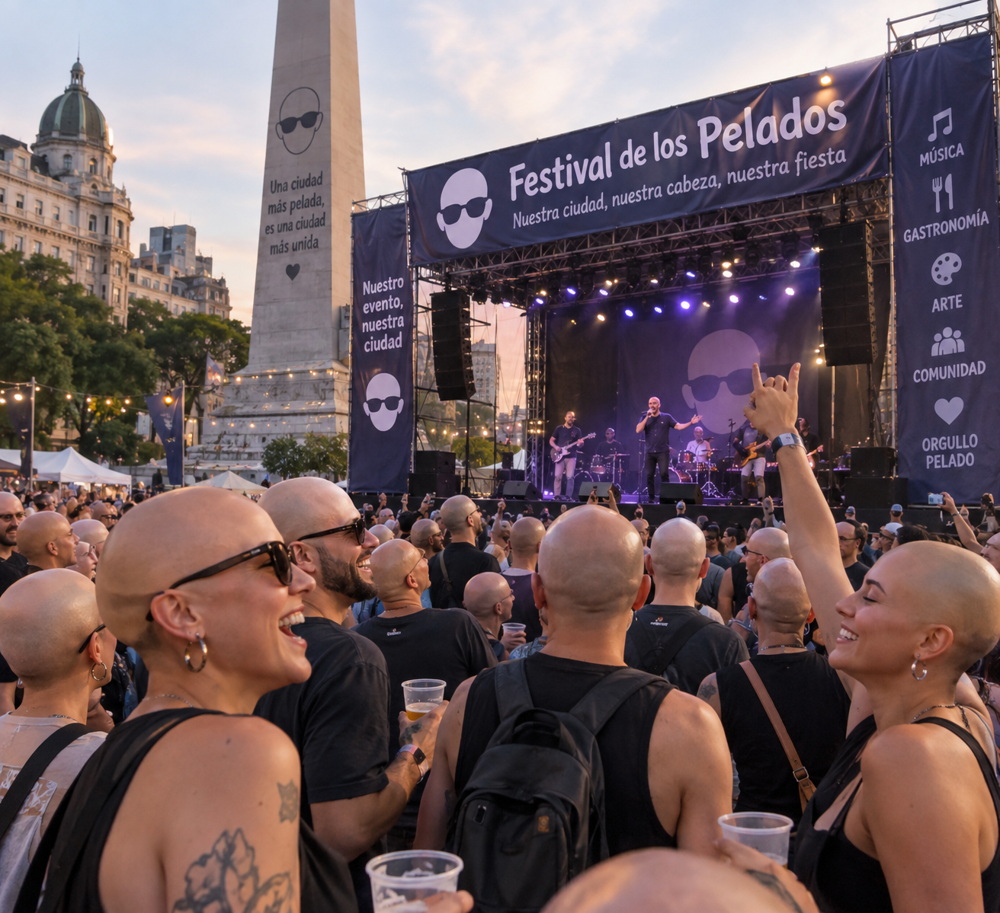

Oficina de turismo
Estamos para orientarte.
Consultá horarios, recorridos y actividades antes de visitar Descabellada. En la oficina de turismo podemos ayudarte a organizar cada jornada, recomendarte rincones para conocer y contarte qué propuestas hay en la ciudad. También podés anotarte para participar en una batalla de aura.
Te esperamos
Centro de Información Descabellada
Av. de los Pelados 1842Centro histórico, Descabellada
A pocos pasos de la Plaza del Remolino Escribir a turismo

Ubicación
Alto Pelado, visto desde arriba
Explorá el relieve y los caminos alrededor del lugar compartido, en San Luis.
La ubicación se interpreta desde el enlace compartido, que apunta a la localidad de Alto Pelado.
Abrir ubicación en Google Maps ↗Inscripción
Elegí un evento y reservá tu lugar
Completá tus datos, seleccioná una actividad y te confirmaremos la inscripción por email. Si tenés alguna necesidad de accesibilidad o una consulta especial, podés detallarla en el mensaje para que podamos orientarte mejor. Revisá que tu correo esté escrito correctamente para que podamos responderte sin inconvenientes.
Preguntas rápidas
Antes de venir
¿La entrada a los lugares es gratuita?
Sí, los paseos y espacios públicos de Descabellada son de acceso libre. Algunas actividades especiales pueden tener cupos, por lo que conviene consultar la agenda antes de organizar la visita.
¿Cómo llego desde el centro?
Podés caminar por el paseo costero o consultar recorridos en la oficina. El equipo puede recomendarte un trayecto según el tiempo disponible y los lugares que quieras conocer.
¿Qué es una batalla de aura?
Un encuentro amistoso donde cada participante presenta su energía, creatividad y mejor pose frente al público.